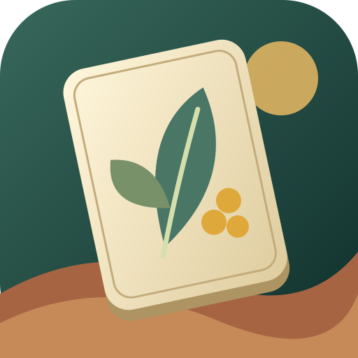

A LITTLE BREATH OF THE BUSH
Outback
Tiles

Find a pair. Make a little space.
The Bush Track
Thirty handmade stops. Three chapters of adventure.
Progress is saved on this device.
Your outback trail
Follow the bush track, seek red earth gold, then brave The Wet Season.
Return tomorrow and try a cleared level with a fresh deal.
0PAIRS LEFT
0FREE PAIRS
0CLEARED
FIND THESE GOLD FACES
Match identical tiles with an open side and nothing on top.
Bright tiles are free. Tap two matching faces.
TAKE A BREATHER
Right where
you left it.
Your stack will wait.
YOUR PATCH OF QUIET
Settings
Undo restores tiles, but does not refund tries or wrong pairs. A shuffle clears undo history.